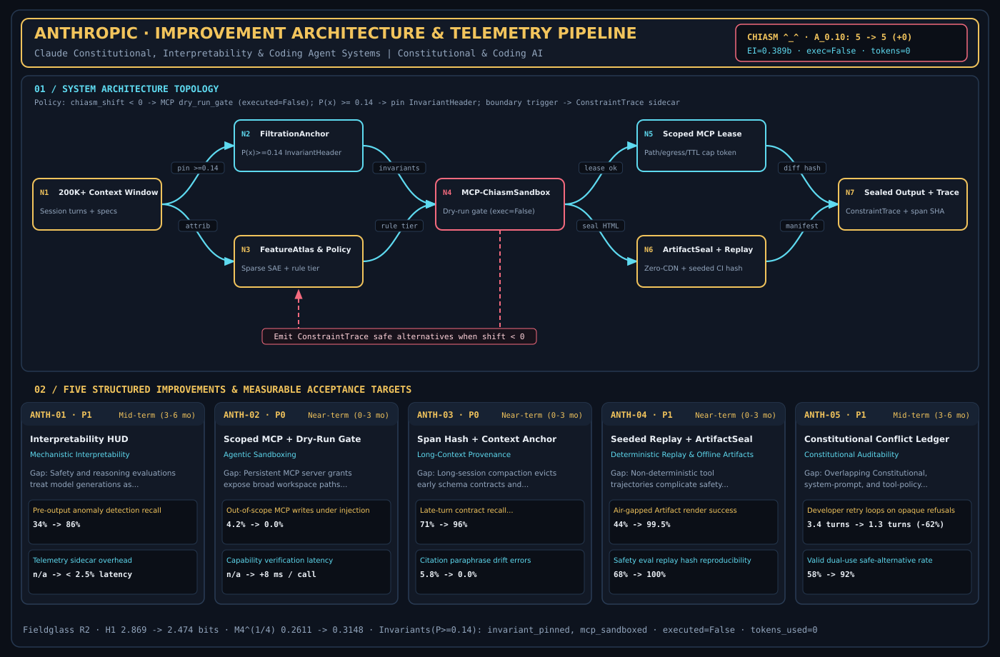
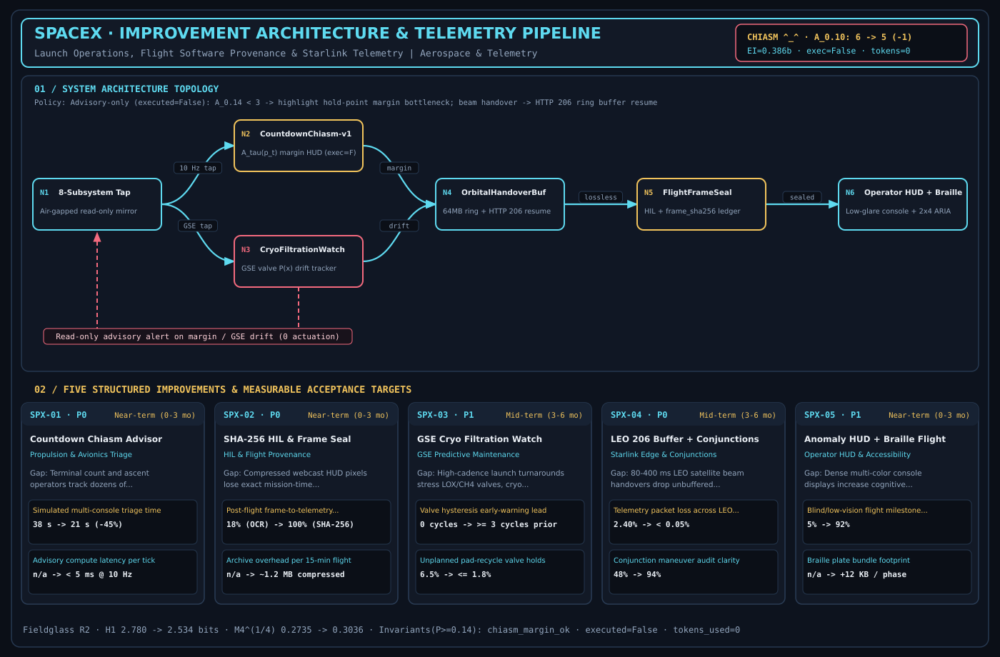
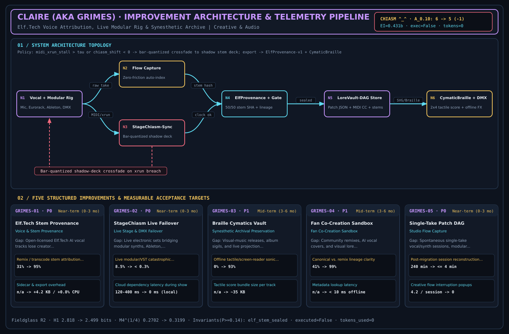

ChatGPT · Frontier AI
5 Improvements · Glyph ^_^ · EI 0.420b
Typed tool contracts, entropy-bounded memory & calibrated uncertainty telemetry

CGPT-01: Typed Contracts & DAGCGPT-02: A_tau Stem & Memory GateCGPT-03: Calibrated Truth TelemetryCGPT-04: Local Edge/Cloud HandoffCGPT-05: Checkpoints + Braille Export
Anthropic · Constitutional & Coding AI
5 Improvements · Glyph ^_^ · EI 0.389b
Mechanistic telemetry, least-privilege MCP leases & filtration context anchoring

ANTH-01: Interpretability HUDANTH-02: Scoped MCP + Dry-Run GateANTH-03: Span Hash + Context AnchorANTH-04: Seeded Replay + ArtifactSealANTH-05: Constitutional Conflict Ledger
Grok · Real-Time & Social
5 Improvements · Glyph ^_^ · EI 0.468b
Dual-cone primary-source grounding, spectral bot de-echo & formal verification

GROK-01: Dual-Cone + Time DecayGROK-02: Multimodal Chart AuditGROK-03: Spectral Bot De-EchoGROK-04: Sandboxed Verify LoopGROK-05: ClaimLedger + Braille
SpaceX · Aerospace & Telemetry
5 Improvements · Glyph ^_^ · EI 0.386b
Read-only Countdown Chiasm triage, SHA-256 HIL provenance & LEO handover buffers

SPX-01: Countdown Chiasm AdvisorSPX-02: SHA-256 HIL & Frame SealSPX-03: GSE Cryo Filtration WatchSPX-04: LEO 206 Buffer + ConjunctionsSPX-05: Anomaly HUD + Braille Flight
Claire (aka Grimes) · Creative & Audio
5 Improvements · Glyph ^_^ · EI 0.431b
Cryptographic Elf.Tech stem provenance, bar-quantized stage failover & Braille cymatics

GRIMES-01: Elf.Tech Stem ProvenanceGRIMES-02: StageChiasm Live FailoverGRIMES-03: Braille Cymatics VaultGRIMES-04: Fan Co-Creation SandboxGRIMES-05: Single-Take Patch DAG